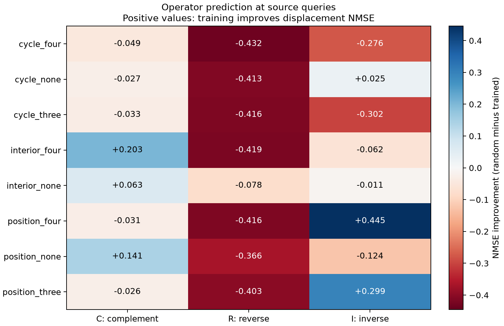
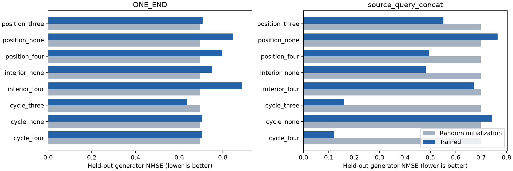

研究主线是任务的精确数学关系如何体现在普通训练的表征中。LIS 迁移消融保持暂停。
主要结果：现有八组模型没有整体优于随机模型的完整群结构证据；position_four 的取逆出现三个源种子一致的局部可预测性。三个新组合的单种子预先预测检验中，四方向记录数组合的生成元误差、取逆排序和非交换顺序判别均符合预测。该信号集中在任务查询位置，不能推广为全部隐藏层或任务自由表征的群表示。原轨道去均值的强结果有指标构造的影响。
复用此前完成、此前未测这些几何指标的三个源模型，每组四任务、每任务每步 32 输入、20,000 步，共 256 万标签。数学预测在提取三个模型表征前保存：四方向记录数对 C/R/I 任务置换闭合，生成元平均误差和取逆误差应低于另外两组；正确 CI 应优于错误 IC。三项结果均符合预测。只测了源种子 1009，三项不是三个独立重复。
| 组合 | 源学习正确率 | 生成元变化误差 | 未拟合复合变化误差 | 错误顺序 − 正确顺序 | 完整维度生成元误差 | 完整维度复合误差 |
|---|---|---|---|---|---|---|
| novel_records | 0.9181 | 0.1414 | 0.2138 | 0.6799 | 0.1110 | 0.1820 |
| novel_minima_pair | 0.9873 | 0.3308 | 0.4897 | 0.0342 | 0.3162 | 0.4815 |
| novel_peak_mixed | 0.9831 | 0.3190 | 0.3964 | 0.2873 | 0.2875 | 0.3373 |
新记录组的查询表征误差 0.141，对照随机初始化 0.352；复合误差 0.214 对照 0.503。ONE_END 位置为 0.421 对照 0.353，未优于随机。查询数字读出零空间的生成元误差为 0.248，正确顺序仍优于错误顺序；这排除了仅限于同一数字线性读出方向的解释，但不排除其他输出相关编码。源学习成绩和联合标签统计仍有差异。
原轨道去均值方案可能人为构造变号规律。因此在看到早期辅助结果后，单独登记并补做直接检验：仅输入 h(x)，不输入轨道均值或目标隐藏向量；长度均值、PCA 和生成元均仅在拟合划分估计。以下数值是完整隐藏空间的变化量归一化误差，恒等预测基线为 1；越低越好。ρ=I+W，以源 h(x) 保留未投影成分，并预测真实变换造成的变化。复合词未用于拟合。
| 任务组 | 位置 | 训练：生成元变化误差 | 随机：变化误差 | 优于随机 /3 | 训练：未拟合复合变化误差 | 随机：复合变化误差 | 读出零空间变化误差 | 复合律一致性误差 |
|---|---|---|---|---|---|---|---|---|
| cycle_four | ONE_END | 0.5826 | 0.3542 | 0 | 0.5512 | 0.5033 | 0.5840 | 0.4280 |
| cycle_four | source_query_concat | 0.6073 | 0.3551 | 0 | 2.7728 | 0.5042 | 0.6046 | 0.3795 |
| cycle_none | ONE_END | 0.4450 | 0.3542 | 0 | 0.6171 | 0.5033 | 0.4269 | 0.4395 |
| cycle_none | source_query_concat | 0.4935 | 0.3551 | 0 | 1.5080 | 0.5042 | 0.4940 | 0.5010 |
| cycle_three | ONE_END | 0.5754 | 0.3542 | 0 | 0.5483 | 0.5033 | 0.5780 | 0.4018 |
| cycle_three | source_query_concat | 0.6053 | 0.3551 | 0 | 1.9414 | 0.5042 | 0.5966 | 0.3758 |
| interior_four | ONE_END | 0.4868 | 0.3542 | 0 | 0.5322 | 0.5033 | 0.4491 | 0.4900 |
| interior_four | source_query_concat | 0.4480 | 0.3551 | 0 | 0.5316 | 0.5042 | 0.4500 | 0.3915 |
| interior_none | ONE_END | 0.4396 | 0.3542 | 0 | 0.5167 | 0.5033 | 0.3632 | 0.4455 |
| interior_none | source_query_concat | 0.3640 | 0.3551 | 1 | 0.5097 | 0.5042 | 0.3335 | 0.4082 |
| position_four | ONE_END | 0.4611 | 0.3542 | 0 | 0.6063 | 0.5033 | 0.4362 | 0.4741 |
| position_four | source_query_concat | 0.3558 | 0.3551 | 1 | 2.1126 | 0.5042 | 0.4294 | 0.3824 |
| position_none | ONE_END | 0.4817 | 0.3542 | 0 | 0.5447 | 0.5033 | 0.4561 | 0.4503 |
| position_none | source_query_concat | 0.4718 | 0.3551 | 0 | 0.5397 | 0.5042 | 0.4557 | 0.3876 |
| position_three | ONE_END | 0.4099 | 0.3542 | 0 | 0.5821 | 0.5033 | 0.3647 | 0.4376 |
| position_three | source_query_concat | 0.3987 | 0.3551 | 0 | 1.8599 | 0.5042 | 0.4316 | 0.4221 |
相应有限域循环/二面体直接检验：
| 任务组 | 训练：生成元变化误差 | 随机：变化误差 | 训练：复合变化误差 | 精确标签编码变化误差 | 复合律一致性误差 |
|---|---|---|---|---|---|
| P | 0.5193 | 0.5402 | 0.6244 | 0.0000 | 0.4931 |
| M1 | 0.5745 | 0.5402 | 0.6584 | 0.2689 | 0.5487 |
| M2 | 0.5592 | 0.5402 | 0.6420 | 0.2658 | 0.5528 |

在看到低维结果后，额外固定一次完整维度复核，对全部任务组与种子执行，同样只用验证集选正则化。PermWorld 的前缀保留最多 256 维，四任务查询最多 1,024 维；实际受每个任务向量的归一化约束，查询有效秩为 1,020。有限域保留全部 64 维。结论仍是操作特定信号，完整群复合尚未成立。该复核没有按测试结果搜索维度。
| 有限域任务组 | 完整维度生成元变化误差 | 随机变化误差 | 完整维度复合变化误差 | 完整维度投影误差 | 投影幂等一致性误差 |
|---|---|---|---|---|---|
| P | 0.4744 | 0.5339 | 0.5366 | 0.6964 | 0.0308 |
| M1 | 0.5359 | 0.5339 | 0.5870 | 0.8354 | 0.0249 |
| M2 | 0.5302 | 0.5339 | 0.5860 | 0.7983 | 0.0261 |
生成元单独拟合，复合操作不参与拟合；验证集只选择岭回归强度。测试误差越低越好。表征按完整操作轨道留出，并去除轨道不变成分。复合一致性必须结合实际预测误差解释。指标不是 CKA，也不对应此前跨模型的 24/24 CKA 结果。
PermWorld：24 个已有四任务训练模型、3 个匹配随机初始化；588 个新完整轨道，共 4,704 个排列，与记录的源/目标数据全部不重叠。拟合/验证/测试轨道为 336/84/168。全部四层和两个提取位置均报告。64 维 PCA 只使用拟合轨道。

| 任务组 | 训练：生成元误差 | 随机：生成元误差 | 胜过随机的种子 /3 | 训练：未拟合复合误差 | 随机：复合误差 | 轨道重标记控制误差 | 数字读出零空间误差 | 错误顺序 − 正确顺序 |
|---|---|---|---|---|---|---|---|---|
| cycle_four | 0.7066 | 0.6956 | 1 | 0.9489 | 0.9692 | 0.9909 | 0.6932 | 0.0061 |
| cycle_none | 0.7050 | 0.6956 | 2 | 0.8582 | 0.9692 | 0.9850 | 0.7256 | 0.0749 |
| cycle_three | 0.6361 | 0.6956 | 3 | 0.9046 | 0.9692 | 0.9850 | 0.6225 | 0.0102 |
| interior_four | 0.8890 | 0.6956 | 0 | 0.9821 | 0.9692 | 0.9850 | 0.8721 | 0.0008 |
| interior_none | 0.7506 | 0.6956 | 1 | 0.8697 | 0.9692 | 0.9835 | 0.6728 | 0.1274 |
| position_four | 0.7962 | 0.6956 | 1 | 0.9098 | 0.9692 | 0.9833 | 0.7477 | 0.0432 |
| position_none | 0.8477 | 0.6956 | 0 | 0.9576 | 0.9692 | 0.9877 | 0.8509 | 0.0136 |
| position_three | 0.7068 | 0.6956 | 1 | 0.8657 | 0.9692 | 0.9815 | 0.6181 | 0.1790 |
| 任务组 | 训练：生成元误差 | 随机：生成元误差 | 胜过随机的种子 /3 | 训练：未拟合复合误差 | 随机：复合误差 | 轨道重标记控制误差 | 数字读出零空间误差 | 错误顺序 − 正确顺序 |
|---|---|---|---|---|---|---|---|---|
| cycle_four | 0.1205 | 0.6985 | 3 | 0.1659 | 0.9709 | 0.9786 | 0.5036 | 0.0006 |
| cycle_none | 0.7432 | 0.6985 | 0 | 0.8724 | 0.9709 | 0.9861 | 0.6917 | 0.0269 |
| cycle_three | 0.1597 | 0.6985 | 3 | 0.2211 | 0.9709 | 0.9811 | 0.4607 | 0.0009 |
| interior_four | 0.6717 | 0.6985 | 3 | 0.8237 | 0.9709 | 0.9849 | 0.7754 | 0.0029 |
| interior_none | 0.4823 | 0.6985 | 3 | 0.6538 | 0.9709 | 0.9841 | 0.5061 | 0.6541 |
| position_four | 0.4968 | 0.6985 | 3 | 0.6977 | 0.9709 | 0.9882 | 0.5945 | 0.0178 |
| position_none | 0.7652 | 0.6985 | 0 | 0.9223 | 0.9709 | 0.9891 | 0.8138 | 0.0282 |
| position_three | 0.5511 | 0.6984 | 3 | 0.7229 | 0.9709 | 0.9878 | 0.6208 | 0.0549 |
F5⁴ 上的四坐标循环移位生成 C4，加反射生成 D4。不可逆投影 P 将第三坐标置零，严格满足 P²=P。使用此前 27 个统计匹配的模型（3 任务组 ×3 世界 ×3 源种子），各源任务正确率均为 100%。旋转/反射按完整轨道留出；投影按保留的三个坐标划分，变换后的图像也跨划分不重叠。源模型曾见过全部 625 输入，因此仅检验探针推广。32 维 PCA 与变换拟合只使用探针拟合集。
| 任务组 | 循环生成元误差 | 随机循环误差 | D4 复合误差 | 投影误差 | 随机投影误差 | 双投影预测误差 | P² 与 P 的一致性误差 | 精确标签编码投影误差 |
|---|---|---|---|---|---|---|---|---|
| P | 0.7195 | 0.8666 | 0.8131 | 0.6563 | 1.0035 | 0.6832 | 0.0341 | 0.0000 |
| M1 | 0.8557 | 0.8666 | 0.9590 | 0.8220 | 1.0035 | 0.8685 | 0.0253 | 0.3732 |
| M2 | 0.8667 | 0.8666 | 0.9746 | 0.7877 | 1.0035 | 0.8331 | 0.0289 | 0.3732 |
完整结果：直接逐操作误差 · 轨道去均值：全部层与子空间 · 完整维度汇总 · 有限域逐设置 · 机器可读汇总 · 主核验 · 补充核验。
相关原始研究：Kornblith 等，CKA，2019；Chughtai 等，有限群计算机制，2023。本实验尚不能确认新颖性。